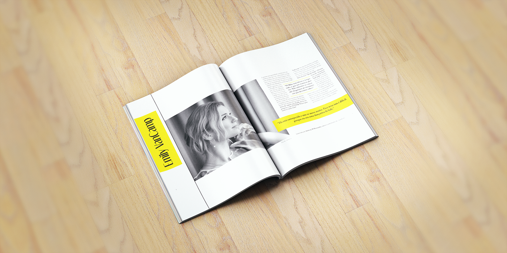
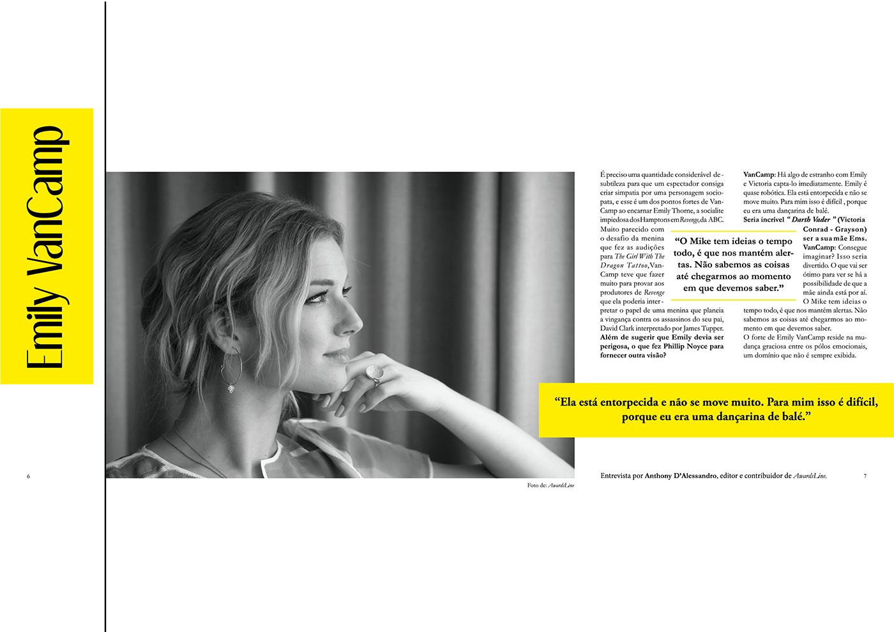

EDITORIAL - PAGINATION
Second Year of University
Final Art in aplication
Final Art
As part of the discipline of Design I, it was suggested to us the creation of a double page. In it we had to articulate different elements: image (illustration / photography); subtitle; title; text in column; highlight text; note; page numbers; font family with at least three styles (regular, italic, bold). The second and final phase consisted in the final art of one of the solutions, later chosen by the teacher. In the composition, I tried to use all the elements without exaggeration and make it as smooth and proportionate as possible. In the final work, as it was allowed, I made some minor changes and chose as the theme for my paging an interview with a Canadian actress.

© Faculdade de Belas Artes da Universidade do Porto | 2016 | Portefólio Tânia Ramos